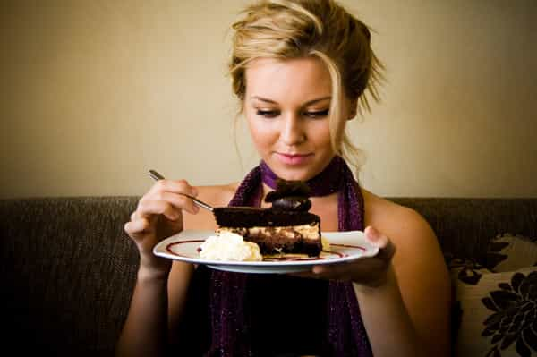
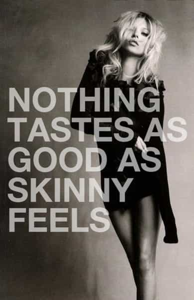

< < < Back
Open Letter To Fat Girls – Return Of Kings
Dear Fat Girls,
I have a very simple solution for you on how to lose weight. It’s so simple and easy, you may not believe me. It will work despite your “glandular issues” or “unlucky genetics.” In fact, you don’t even have to do anything — it requires absolutely no planning or energy on your part. You can even eat cheesecake, have cupcakes, enjoy wine and snack on that froyo you’ve been glaring at every time you walk by that stand at the mall. How did I discover this prized knowledge? What is this amazing revolutionary technique?
Other than basic logic, no science involved other than observation. From dating, living with and talking to skinny girls, I’ve noticed a pattern amongst them on how they stay skinny. This transcends nationality, from America to Italy to Ukraine. It requires no specialized tools and can be done whenever, wherever. So what is it?
Stop eating so fucking much.
Seriously. There is nothing else you need to do other than to put the damn fork down. And by way of story, let me explain how this works.
The Skinny Foreigners

I’ve traveled a lot. With respect to this topic, two things remain indelible in my mind. When I was 21, I remember sitting at the Trevi Fountain in Rome having gelato and noticing that all these Italian girls around me were so damn skinny. And they were all having gelato. How is this possible? What about all the sugar/carbs that goes hand in hand with desserts and ice cream and makes you fat? Well it didn’t take long to find out this gelato is not preceded with a large creamy pasta dish, or calorie dense supposedly healthy turkey sandwich with aioli, cheddar and bacon. Gelato was lunch.
Then we have Ukraine. There was an incredibly cheap café my friend and I had lunch at every day. While we as hungry male Americans would pack two trays full of food every time, I noticed all these skinny girls in Ukraine shared the same type of meal on a daily basis. A glass of juice, a piece of bread and a small cup of soup. That’s it. Perhaps some would exchange the soup for a small side salad with lettuce, tomatoes and maybe shredded carrots. There was no appetizer, main and dessert. We’re talking maybe 500 calories at most here.
There was also the fact that I was told repeatedly by Ukranian girls that its their job is to be hungry and drunk, but that beautiful thought process is for another article.
The Model Roommate

How many times have you heard a chunkster say something along the lines of “Ugh, I hate her! Look how skinny she is and she’s having cake! If only I had her genes. Well nothing I can do, I’m just unlucky to be fat.”
Bullshit. I lived with a model for a week. A legit runway model. I saw what she ate on a daily basis. Banana nut muffins. Chocolate. Candy. Ice Cream. Basically anything she wanted. But—and it’s a big but—it was in small amounts. I’ll never forget her walking into the kitchen at lunch time, cutting half a muffin, and going “it’s time for lunch!” Again, it didn’t matter what she ate, just how much she ate. It’s not magic or genetics that she is thin.
Compare that to my other roommate. She is one of these chunksters. She has organic eggs fried in olive oil with turkey bacon for breakfast, along with whole wheat bread and some fruit. For lunch she will have some whole wheat pasta with tomato sauce or a turkey sandwich and maybe some yogurt on the side. She will have a subway sandwich for herself and snack on various things throughout the day, such as the other half of the muffin the model didn’t eat. Overall a “healthy” diet, but she eats a lot. Probably over 2000 calories a day. See the difference?
As another example, look at this article. Even the title seems to imply a Victoria Secret model can eat bacon, egg and cheese sandwiches on a daily basis and still have that body. Fran the fattie sees the article, skims it and says well if she can eat that, so can I. However, really take a look at what that article says she eats in a day. That sandwich (350 calories), 2 cappuccinos (240 calories total), and half a “huge” salad (curious what a model considers a “huge” salad, but let’s assume 400 calories). That’s less than 1000 calories in the day. And, she also does some physical activity (yoga in this case).
Food Is Not Important
Currently one of the girls I am seeing has a very nice body. She goes for a run maybe three times a month. While guys may need to exercise to have a good body, girls do not. So her body is possible because she simply forgets to eat some days. Everything else takes priority – work, friends, tv, me, hanging out, etc. If she’s not hungry, she doesn’t eat. She doesn’t eat because it’s “lunch time” or because she just woke up and has to have breakfast. Yesterday I went to help her jump start her car, and she expressed that she was hungry to me, probably because she “forgot” to eat the day before. As a guy this makes no sense to me, but it works for her. And yes fatties, she’s perfectly healthy. The ex-stripper I dated was the same way. Putting aside her flaws as a girlfriend, her body was ideal and food was an afterthought to her… she would sometimes lose track of when she ate last and have a bite or two of food when she actually did eat.
Conclusion
Of course you can exercise a lot, get a trainer, do Pilates and eat more and become or remain skinny that way. But let’s say you are too lazy, cheap or poor to do so. It’s still pretty simple for a girl not to be fat. Just eat less. And when in doubt ladies, never forget what Kate Moss stated years back and take it to heart:

Read Next: The Power of Shame